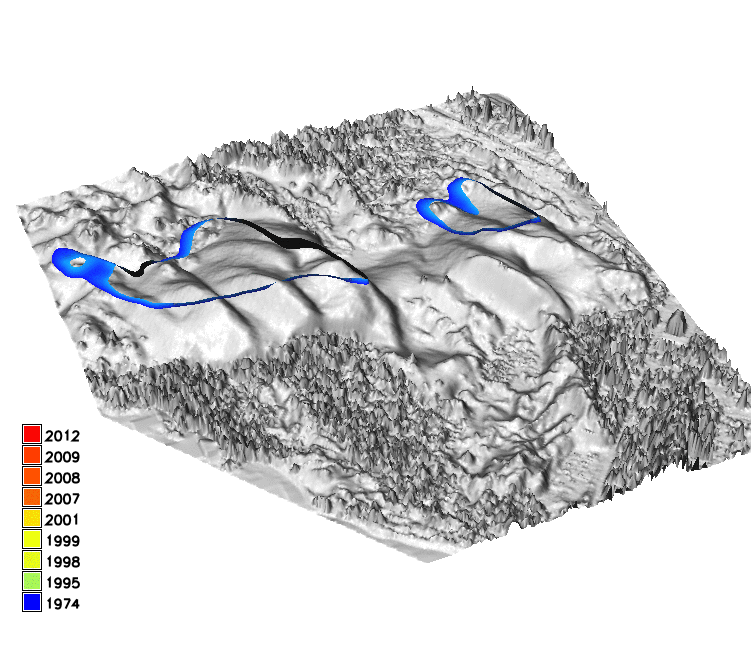
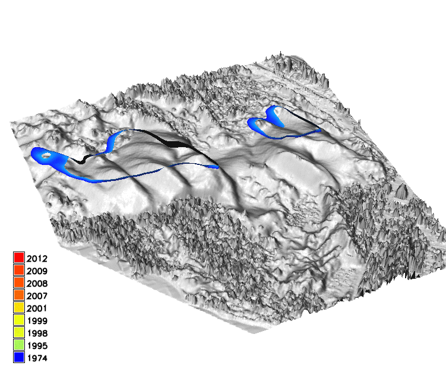

Landscape Dynamics
Water, wind, gravitation, plants, animals and humans continuously change landscape surface
Land surface processes are poorly understood and our predictive capabilities are limited
Hazard Management decisions are often based on insufficient information
Advances in 3D mapping
Lidar and sUAS structure from motion dramatically increased our capacity to
map 3D landscapes and assess the change on (almost) continuous basis
Rapid development of tools for terrain time series analysis
Multivariate terrain time series analysis
1D lines - transects, horizontal migration of line features: shorelines, contours, ridges, crests, channels
2D rasters - per cell statistics, core and envelope, rate of vertical change
3D rasters - space-time cube contour evolution isosurfaces
Visualization: DEM time series
Sand dune on NC coast: Jockey's Ridge migration 1974 - 2012


Horizontal migration Analysis
Horizontal migration was measured by extracting crests and manually measuring distances along transects
Visualization: Space-Time Cube
Jockey's Ridge 16m, 20m contour evolution isosurfaces z = f (x,y,t)
 


Horizontal Migration Analysis in STC
do the rates of migration change with elevation? does the direction of migration change over time
migration rate at given elevation - migration of contour
segment time series of zi=c, i=1,...n into non-intersecting segments, then
t = gc(x,y)